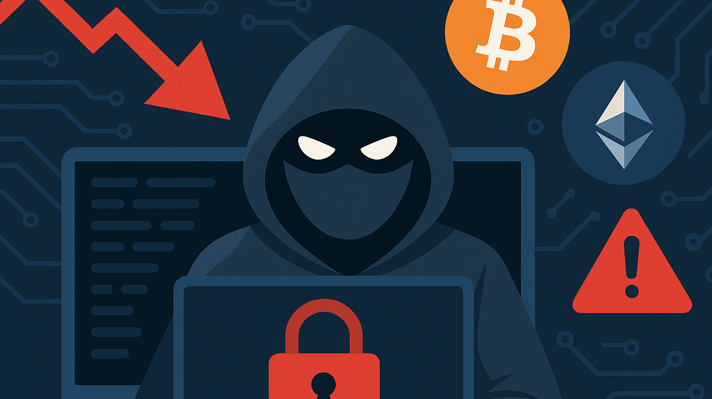
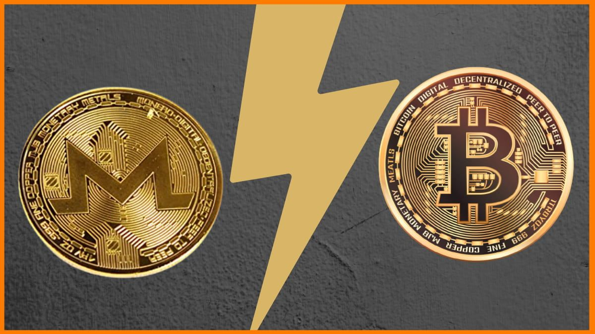

Cryptojacking
Primero dejame decirte que, aunque el nombre asusta, no te saltes este módulo por favor. Es importante que aprendas
qué es y cómo evitar este nuevo tipo de ataque. No voy a usar palabras muy difíciles de comprender como en otras
páginas webs.
Lo único que debes saber es que un malware es un programa malicioso que, tal vez por error, tu instalastes en tu
computador. El hacker puede robarte información u otras cosas.
¿Qué es el Cryptojacking?
El Cryptojacking es un tipo de ciberdelito en el que un atacante usa el procesador (CPU o GPU) de tu computadora, celular o
cualquier dispositivo que tengas. Esto lo hace con el objetivo de minar criptomonedas a su favor.
Como sabes, para minar criptomonedas necesitas una computadora bastante potente para hacerlo de manera rápida para
ganarle a los otros mineros.
Bueno, aquí el hacker aprovecha la potencia de tu computadora o incluso celular para minar.
En pocas palabras, el gana dinero gracias a tu computadora (y otras más que logró vulnerar).

A diferencia de otros malwares que sirven para robar tu información, el cryptojacking roba energía y electricidad.
Tu computadora gasta más energía y electricidad ya que esta minando criptos (sin que tú te des cuenta).
¿Cómo infecta el Cryptojacking?
Hay principalmente 3 tipos de criptojacking:
- Basado en el navegador: Ocurre cuando simplemente estas en una página web infectada con código criptojacking.
- Basada en host: Ocurre cuando descargas un programa de dudosa procedencia de internet. Es más peligroso que el anterior
yaque el malware está en tu computador.
- Basada en ram: Este es más raro ya que usa técnicas avanzadas como la inyección de código y la manipulación de la
memoria para usar la RAM para la criptominería en tiempo real sin dejar pistas.
Una buena noticias (para nosotros) es lo siguiente:
Los hackers se dieron cuenta que minar se hace cada vez más complicado ya que tu computadora necesita ser muy potente.
Por eso muchos minero usan asic. Si el hacker logra infectar tu computadora o celular con código cryptojacking, no va a poder
hacer mucho ya que tu celular o computadora no es muy potente para la minería.
Por esa razón, actualmente los hackers apuntan a servidores empresariales donde el poder cómputo es masivo.
¿Porque XMR y no BTC?
Hace un momento te dije que los hackers prefieren atacar servidores empresariales o incluso de la nube (aws, google cloud, etc)
pero otros hackers optan por minar Monero en vez de Bitcoin.
Aunque Bitcoin es la criptomoneda más popular del mundo, para los ciberdelincuentes presenta serias desventajas:
1. Como explique en el módulo anterior, Bitcoin es seudónimo, no es anónimo. XMR fue diseñado desde cero para
ser intraducible y completamente privado.
2. Minar BTC de forma rentable requiere computadoras altamente especializadas y costosas llamadas (ASICs). Esto debido a que
Bitcoin usa SHA-256.
En cambio, Monero utiliza un algoritmo llamado RandomX. Está optimizado para funcionar en procesadores (CPU) normales.
3. Bitcoin no es totalmente fungible, por eso las empresas de análisis pueden marcar ciertas monedas de BTC como
"manchadas" si provienen de un hackeo, un ataque de ransomware o un mercado negro. En cambio, monero es diferente.
Al no tener un historial público de transacciones, no existe forma de saber si un Monero en
particular fue usado en un hackeo o comprado legalmente.

¿Cuáles son las consecuencias y cómo las detecto?
1. Tu sistema se vuelve extremadamente lento, las aplicaciones se congelan o tardan demasiado en responder debido
a que el minero consume la mayoría de los recursos del procesador.
2. La minería continua obliga a la CPU/GPU a trabajar a su máxima capacidad durante horas o días. Esto genera
temperaturas elevadas que desgastan los componentes de tu computadora y, en el peor de los casos, algun componente se puede sobrecalentar
y malograrse.
3. Aumento en la factura eléctrica: Al mantener los componentes al 100% de uso continuo, el consumo de energía del
dispositivo o servidor se dispara considerablemente.
4. Puerta de entrada a otras amenazas: Muchos scripts de cryptojacking abren brechas en el sistema o sirven
como vehículo para descargar otros tipos de código malicioso.
¿Cómo las detecto?
1. Por ejemplo, cuando los ventiladores de tu computadora se activan al máximo rendimiento (suenan mucho) constante incluso
cuando solo tienes abiertas tareas básicas (o el equipo está en reposo), la CPU está trabajando bajo una carga anormal.
2. Si notas que una pestaña específica ralentiza todo el sistema y al cerrarla la velocidad vuelve a la normalidad,
esa página o extensión está ejecutando un minero.
3. Revista el administrador de tareas:
- En windows presiona Ctrl + Shift + Esc
- En macOS presiona Cmd + espacio y busca "Monitor de actividad".
Revisa la pestaña de Procesos y ordena por uso de CPU. Si notas un proceso desconocido utilizando
constantemente entre el 80% y el 100% de la CPU, es una señal directa de minería no autorizada.